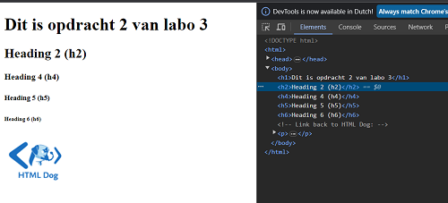

- De HTML-document heeft drie belangrijke delen: html voor het hele document, head voor metadata en body voor de hoofdinhoud. Binnen body zijn koppen ( h1 tot h6), een hyperlink (a), en een afbeelding (img) te vinden. Dus dit komt overeen.
- De "lijntjes" tussen de blokjes geven de hiërarchie weer: HTML-elementen zitten binnen andere elementen. Dit vormt de basis van de DOM waarmee browsers webpagina's begrijpen en weergeven.
- Markering elementen
 Delete element
Delete element
-  Element aanpassing
De elementen die in de acordion zitten zijn :
- h3 element: Dit element vertegenwoordigt de kop of de titel van de sectie.
- div element: Dit element bevat de inhoud van de sectie weergegeven wordt wanneer de sectie geopend is.
- p elementen: Binnen een div element kan er één of meer p elementen aanwezig zijn om inhoud weer te geven.
- ul element: Binnen de div element kan ook een of meer (ul) lijsten met lijstitems (li) aanwezig zijn.
- Wanneer je op een gesloten section klikt, zal de DOM-tree wijzigen om de section te openen en de inhoud ervan weer te geven ,dit wordt bereikt door JavaScript die de CSS van de section aanpast om die zichtbaar te maken door toe te voegen door het aanpassen van de display eigenschap met hover close of open.
- De eenvoudige HTML-broncode van de Accordion wordt uitgebreid door de functionaliteit van JavaScript, het omvat toevoegen van attributen en gebeurtenissen om de interactieve werking van de Accordion mogelijk te maken, wat resulteert in een groot verschil tussen de broncode en de uiteindelijke DOM-structuur van de webpagina.